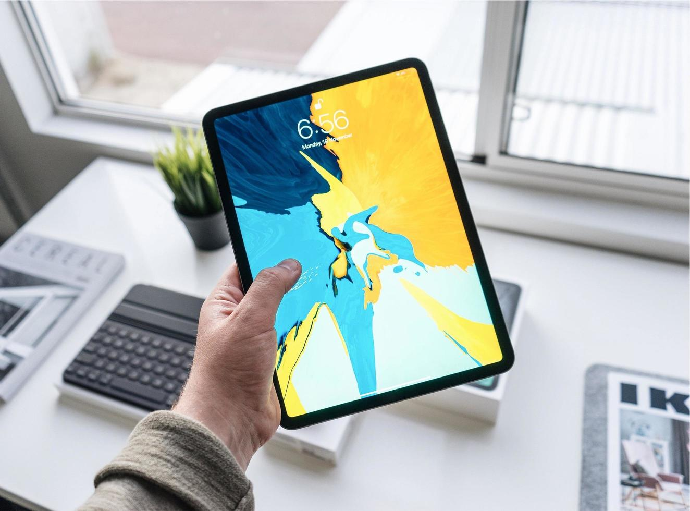
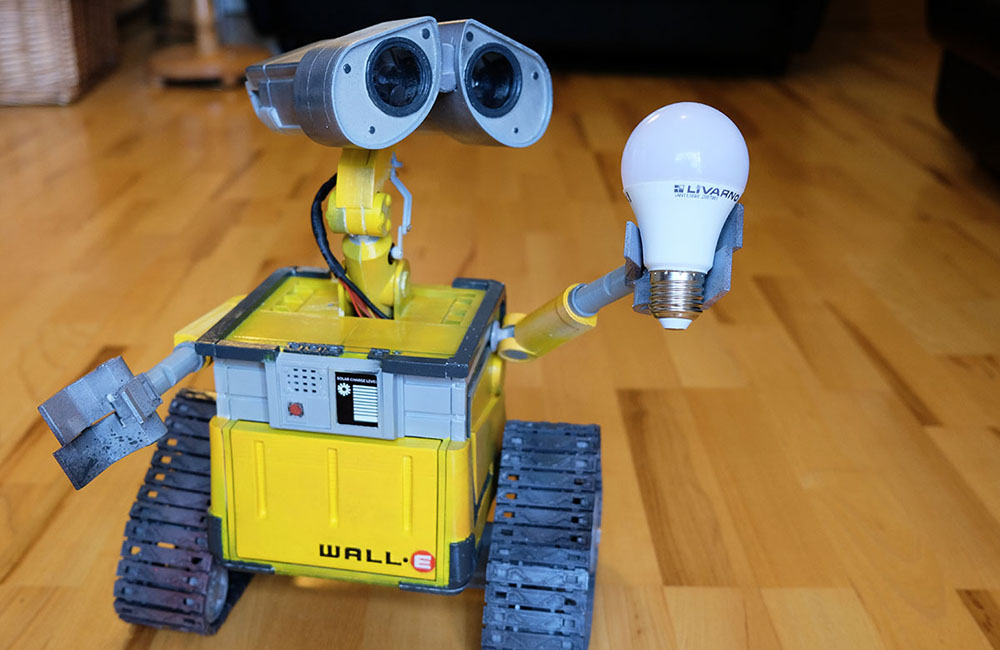

Mi nombre es Irene Urcia y soy estudiante de la carrera de Publicidad y Marketing Digital, actualmente estoy cursando el 8vo ciclo y también soy practicante de marketing en una agencia llamada GAM Soluciones Integrales. Creo que lo divertido de mi carrera es poder llevar mis pensamientos a un siguiente nivel, puedo investigar, crear, interactuar y tengo como resultado la satisfacción tanto a nivel personal como a nivel de recepción de las marcas.
 |
Me presentoTengo 24 años, me gusta muchísimo leer, bailar y hacer ejercicios. Un dato interesante sobre mi es que leo de manera veloz porque cuando tenía 16 años mi mamá me metió a un curso de "Oratoria y Lectura veloz", de hecho fue divertido hasta cierto punto jaja, sentía que me mareaba a veces, pero logré llegar al nivel 12 que eran 1200 palabras por minuto y desarrollé así una mejor capacidad de análisis y comprensión, lo cual me sirve hasta el día de hoy en casi todas las actividades que realizo. |
|  | ¿Laboratorio de Innovacion 2?Mis expectativas en este curso, en primer lugar es volverme experta en programación, me está gustando esto de poder crear mi propio sitio online, ya que actualmente cuento con una marca llamada Mr. Alfajor y mi reto es poder crearle una propia web con catálogo incluido. |
|  | ¡El mejor Team!En relación a mi equipo de trabajo, nos agrada la idea de poder crear algo a nivel tecnológico, estamos interesados en crear alas de ganso, lentes de realidad virtual o quizás algo más creativo como un robot de la película WALLE, creo que 5 cabezas piensan mejor que una y podríamos llevar este curso a un siguiente nivel. |